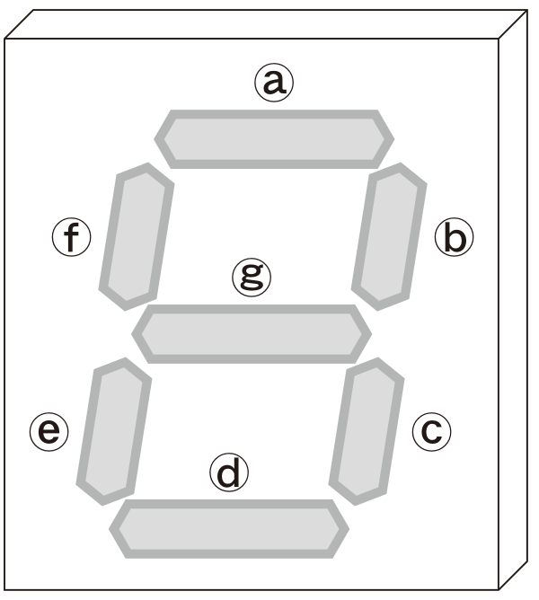
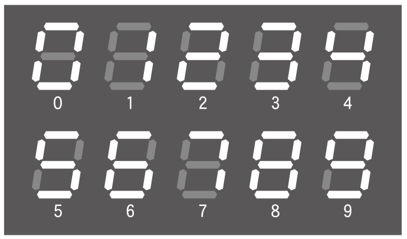
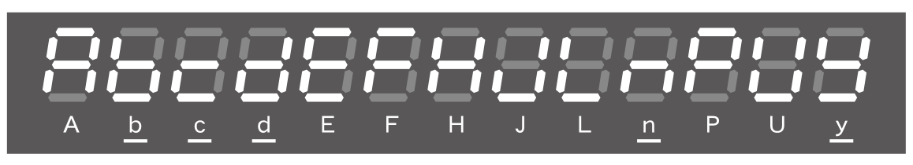
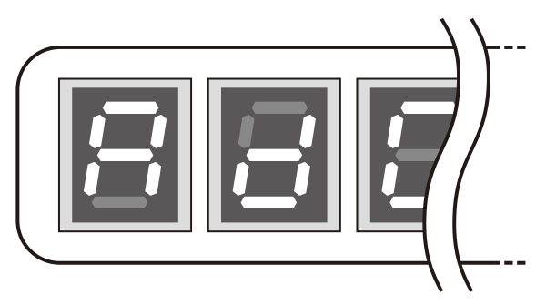
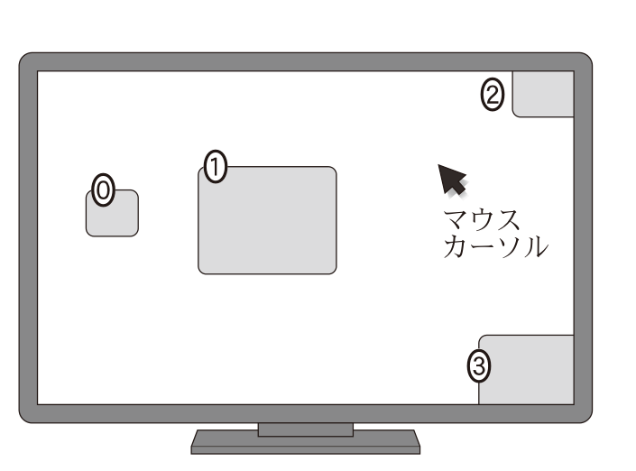
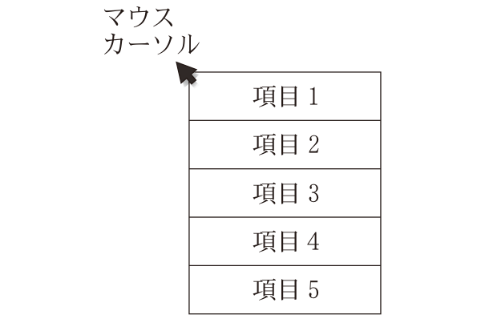

第1問 次の問い（問1～4）に答えよ。（配点20）
問1 次の問い（a・b）に答えよ。
a 次の文章中の空欄 ア に入れるのに最も適当なものを，後の⓪～④のうちから一つ選べ。
インターネットで情報をやり取りする際，発信者が本人であることを確認するためにデジタル署名が利用できる。また，デジタル署名を用いると，その情報が ア を確認できる。
b 近年，128ビットで構成されるIP アドレスが利用されるようになった理由の一つとして最も適当なものを，次の⓪～④のうちから一つ選べ。 イ
問2 次の文章を読み，空欄 ウ ～ カ に当てはまる数字をマークせよ。
図1に示した部品は，棒状の7個のLEDⓐ～ⓖを使って数字や一部のアルファベットを表示するものである。この部品を7セグメントLED と呼び，例えば数字の0～9は図2のようにLED を点灯させて表示することができる。


7セグメントLED における，ⓐ～ⓖを点灯させる組合せは，すべてのLEDが消灯している状態を含めて全部で ウ エ オ 通りである。
図1に示した部品は，アルファベットとして図3に示す13種類を表示できる。

これらの大文字8種類，小文字5種類のアルファベットに加え，数字10種類を用いて，ある製品のエラーコードを表示する。図4のように，1桁目を大文字のアルファベット，2桁目を小文字のアルファベット，3桁目以降の桁については数字のみを用いる場合，図1の7セグメントLED の部品が全部で少なくとも カ 個あれば5，000種類のエラーコードを表示することができる。

問3 次の文章を読み，空欄 キ に当てはまる数字をマークせよ。また，空欄 ク に入れるのに最も適当なものを，後の解答群のうちから一つ選べ。
チェックディジットは，書籍のISBN コードなどで数字の入力ミスを検出するためなどに利用されている。ここでは，5桁の数字（N5N4N3N2N1）の利用者ID に，チェックディジット1桁（C）を加えた6桁の識別番号（N5N4N3N2N1C）を考える。チェックディジットの生成方法として，次の2種類を考える。
【生成方法A】利用者ID の各桁の値を足し合わせ，10で割った余りR を求め，10からR を引いた値をチェックディジットとする。
【生成方法B】利用者ID の各奇数桁（N5，N3，N1）の値をそれぞれ3倍にした値と，各偶数桁（N4，N2）の値を足し合わせ，10で割った余りR を求め，10からR を引いた値をチェックディジットとする。
なお，いずれの生成方法も，R が0の場合は，チェックディジットを0とする。
例えば，ある利用者ID が「22609」の場合にチェックディジットを計算すると，生成方法Aでは「1」になり，生成方法Bでは「 キ 」となる。
これらのチェックディジットでは，1桁の入力ミスは検出できても，2桁の入力ミスは，検出できないことがある。生成方法Bはこの点について多少検出できるように工夫されている。例えば， ク 入力ミスをした場合は，生成方法Aでは検出できることはないが，生成方法Bでは検出できることがある。
問4 次の文章を読み，後の問い（a・b）に答えよ。
マウスカーソルをメニューやアイコンなどの対象物に移動する操作をモデル化し，Web サイトやアプリケーションのユーザインタフェースをデザインする際に利用されている法則がある。この法則では，次のことが知られている。
a 次の文章中の空欄 ケ に入れるのに最も適当なものを，図5の⓪～③のうちから一つ選べ。
この法則では，PC などでマウスを操作する場合，マウスカーソルはディスプレイの端で止まるため，ディスプレイの端にある対象物は実質的に大きさが無限大になると考える。
この法則に基づくと，図5の⓪～③で示した対象物のうち，現在ディスプレイ上の黒矢印で示されているマウスカーソルの位置から，最も短い時間で指し示すことができるのは ケ である。

b 次の文章中の空欄 コ ・ サ に入れるのに最も適当なものを，後の解答群のうちから一つずつ選べ。
操作時間を短くするためにこの法則を適用した事例として，利用頻度に基づいてメニュー項目を配置する方法がある。
ここでは，マウスを右クリックした際に，マウスカーソルに対して図6に示すような位置で表示されるメニュー項目の配置について考える。マウスカーソルで選択できる各メニュー項目の大きさは同じであるとし，この法則のみに沿って設計されたとすると，「項目5」は，他の項目と比べ利用頻度が コ 項目なので，意図的に サ に配置されていると考えられる。
